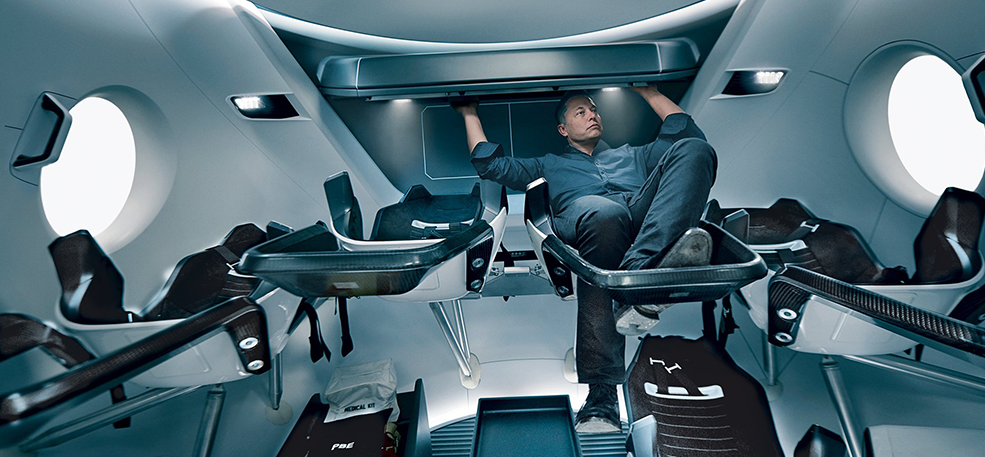
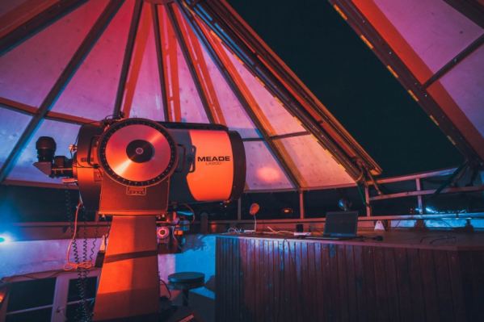
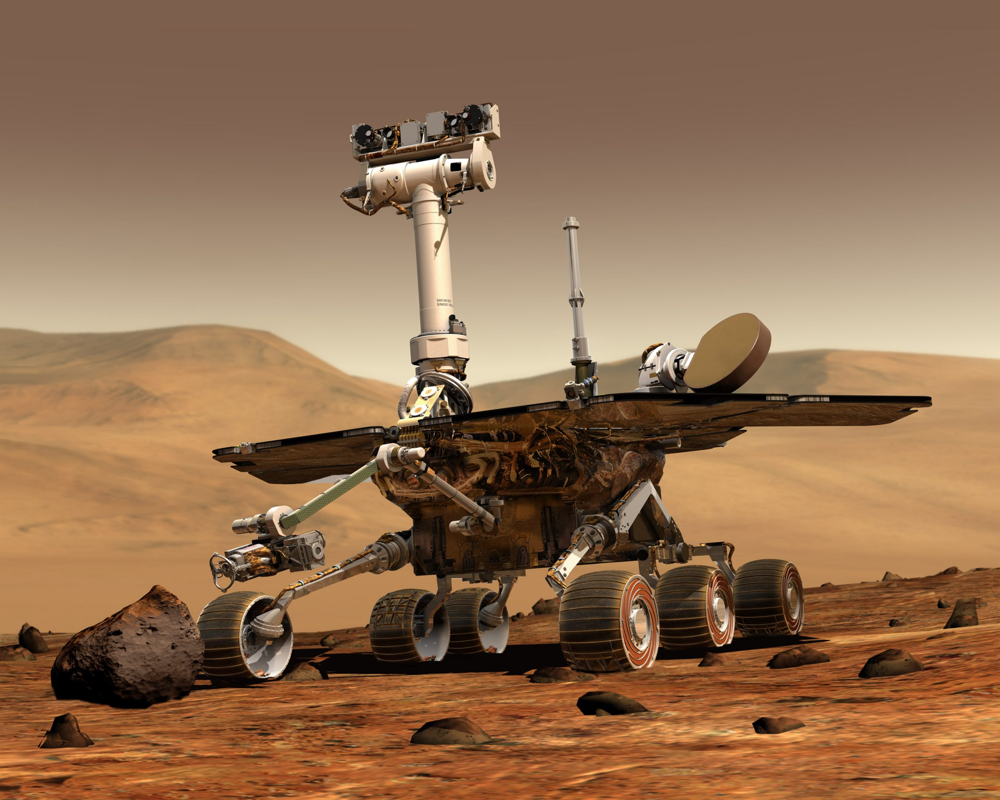
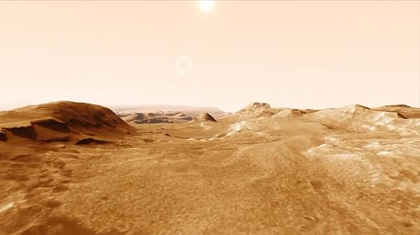
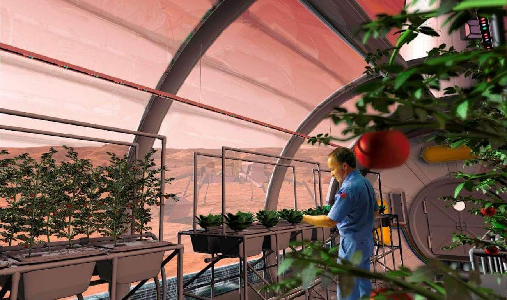

<!DOCTYPE html>
<html lang="en">
<head>
    <meta charset="UTF-8">
    <title>Mars</title>
    <link rel="stylesheet" href="build/styles/normalize.css">
    <link rel="stylesheet" href="build/styles/main.css">
</head>
<body>
    <header class="main-header">
        <div class="main-header_navigation">
            <div class="main-header_logo">
                
                <div class="logo-name">
                    <span>PANTHEON</span>
                    <span>project</span>
                </div>
            </div>
                <div class="main-header_menu">
                    <button class="menu-open">Меню</button>
                    
                </div>
        </div>
        <div class="main-header_preview">
            <p class="preview_descr">ПУНКТ НАЗНАЧЕНИЯ: <span>ПАНТЕОН</span> </p>
            <h1 class="preview_title">МАРС</h1>
            <div class="preview_container-video">
                <iframe src="https://www.youtube.com/embed/H86xRl1s-Ko" frameborder="0" allow="accelerometer;
                   autoplay; clipboard-write; encrypted-media; gyroscope; picture-in-picture" allowfullscreen></iframe>
            </div>
            <div class="preview_vertical-text">
                <span>П А Н Т Е О Н</span>
                <span>О Л И М П</span>
            </div>
        </div>
        <button class="main-header_down"></button>
    </header>
    <section class="information-mars">
        <ul class="consider-list">
            <li class="consider-item">
                <span>4</span>
                <p>четвёртая планета
                    по удалённости
                    от Солнца</p>
            </li>
            <li class="consider-item_line"></li>
            <li class="consider-item">
                <span>7</span>
                <p>седьмая по размерам
                    планета Солнечной
                    системы</p>
            </li>
            <li class="consider-item_line"></li>
            <li class="consider-item">
                <span>10,7%</span>
                <p>массы Земли
                    (ваш вес будет в 3 раза
                    меньше, чем на Земле)</p>
            </li>
            <li class="consider-item_line"></li>
            <li class="consider-item">
                <span>2</span>
                <p>спутника вместо
                    Луны (как картошка,
                    только больше)</p>
            </li>
            <li class="consider-item_line"></li>
            <li class="consider-item">
                <span>21 км</span>
                <p>высота самой высокой
                    горы Марса.</p>
            </li>
            <li class="consider-item_line"></li>
            <li class="consider-item">
                <span>+20</span>
                <p>максимальная
                    температура
                    на поверхности</p>
            </li>
        </ul>
        <div class="mars-memory">
            <h2 class="mars-memory_main-title second-title">Марс. Вспомнить все.</h2>
            <div class="mars-memory_container-info">
                <div class="mars-memory_about-mars">
                    <h3 class="mars-memory-title small-title">Что такое Марс</h3>
                    <p class="mars-memory_descr main-descr">Планета Солнечной системы, названа в честь Марса — древнеримского бога войны.
                        Иногда Марс
                        называют «красной планетой» из-за красного оттенка поверхности, придаваемого ей оксидом железа. Особенности планеты —
                        наличие слабой отмосферы, состоящей в основном из улекислого газа, времена года, пылевые бури, сильная эррозия почв.
                    </p>
                </div>
                <div class="mars-memory_about-mars">
                    <h3 class="mars-memory-title small-title">Где это? Как туда доехать?</h3>
                    <p class="mars-memory_descr main-descr">Расстояние до Марса — почти 56 миллионов километров.
                        Чтобы преодалеть такое расстояние, нужно лететь на межпланетоном корабле 7-8 месяцев.
                    </p>
                </div>
            </div>
        </div>
        <div class="about-musk">
            <div class="about-musk_main-info">
                <h2 class="about-musk_main-title second-title">От идеи до реализации</h2>
                <h3 class="about-musk_title small-title">Илон Маск. Гений или безумец?</h3>
                <p class="about-musk_descr main-descr">Канадско-американский инженер, предприниматель, изобретатель и инвестор; миллиардер.
                    Основатель компаний SpaceX и X.com, позже переименованной в PayPal. Планирует потратить большую часть накоплений на
                    реализацию своей мечты, а также мечты многих тысяч романтиков, писателей, учёных: создать внеземную цивилизацию.
                </p>
                <p class="about-musk_descr about-musk_quote main-descr">"Мы должны сделать эту мечту реальностью за наше время жизни.
                    Любой человек, который пожелает отправиться на Марс, должен иметь такую возможность"</p>
                <p class="about-musk_descr main-descr">— заявил Маск на Международной астронавтической конференции в Гвадалахаре (Мексика). Он
                    обосновал необходимость своего проекта вопросом выживания человечества, которое для своего сохранения должно стать
                    «космическим видом». Илон поставил перед собой цель: скоратить стоимость вывода кораблей в космос в 10 раз, что
                    станет первым шагом для человечества в освоении Марса.</p>
            </div>
            <div class="photo-container">
                
            </div>
        </div>
        <div class="price">
            
            <div class="price_main-info">
                <h3 class="price_title small-title">Стоимость перелета</h3>
                <p class="price_descr main-descr">Высадка двоих астронавтов на Луну обошлась США в 20 млрд. долларов.
                    Маск стремится сократить эту цифру в 20 000 раз, что составит 500 000 долларов на человека.
                </p>
                <div class="price-many">
                    <span>$500k</span>
                    <span>и ты на Марсе!</span>
                    <button class="price_ready-fly">Я готов лететь</button>
                </div>
            </div>
        </div>
    </section>
    <section class="mars-difficulties">
        <h2 class="mars-difficulties_title second-title">Подводные камни в маштабах космоса</h2>
        <div class="mars-difficulties_video">
            <iframe width="100%" height="100%" src="https://www.youtube.com/embed/5brqtN9fQkY" frameborder="0"
                    allow="accelerometer; clipboard-write; encrypted-media; gyroscope; picture-in-picture" allowfullscreen>
            </iframe>
        </div>
        <div class="survival-container">
            <div class="survival-title">
                <button>Жить или выживать?</button>
                <button>Готовы ли технологии?</button>
                <button>Путешествие на грани фантастики</button>
                <button>Жизнь на Марсе</button>
            </div>
            <div class="survival-info">
                <div class="survival-item">
                    <h4>Жить или выживать?</h4>
                    <p>Чем отличаются Земля и Марс? Какие условия встретят новых поселенцев?</p>
                    <p>Марс холодная и засушливая планета, на
                        которой есть своя атмосфера, на 96% состоящая из углекислых газов, а минимальная температура опускается до -140
                        градусов по Цельсию. Каждый год по весне на планете случаются пылевые бури, длящиеся от нескольких часов до
                        нескольких месяцев.
                    </p>
                    <p>
                        На планете отсутствует магнитное поле, поэтому радиационный фон повышен. А низкая гравитация
                        при длитеьном пребывании на Марсе сделает возвращение на Землю невозможным. Полёт на Марс — билет в один конец
                        с целью создать новую цивилиза.
                    </p>
                </div>
                <div class="survival-item">
                    <h4>На Марсе обнаружили подледные соленые озера</h4>
                    <p>Анализируя данные с радара MARSIS, зондирующего ионосферу и поверхность Марса, международная команда ученых
                        подтвердила, что объект, ранее обнаруженный подо льдом на южном полюсе планеты, представляет собой жидкое
                        озеро.
                    </p>
                    <p>Предположительно, вода там — и в ряде обнаруженных исследователями водоемов — остается жидкостью даже при очень
                        низкой температуре благодаря высокой концентрации растворенных в ней солей.</p>
                    <p> Открытие важно для астробиологии и
                        поиска обитаемых ниш на Марсе. Работа опубликована в журнале Nature Astronomy.</p>
                </div>
                <div class="survival-item">
                    <h4>Долины Марса сформировались под действием ледников</h4>
                    <p>Канадские исследователи показали, что большее количество долин на Марсе образовалось из-за таяния воды под
                        покровом льда, а не протекавшими по поверхности Красной планеты реками. </p>
                    <p>
                        «В течение последних 40 лет, с тех пор как были впервые открыты долины Марса, предполагалось, что их породили реки,
                        которые когда-то свободно текли по поверхности планеты, — говорит ведущий автор исследования, аспирантка Университета
                        Британской Колумбии Анна Грау Галофре. — Но на Марсе сотни долин, и они очень отличаются друг от друга.
                    </p>
                </div>
                <div class="survival-item">
                    <h4>На Марсе нашли новые полосы поглощения углекислоты и озона</h4>
                    <p>Российский комплекс ACS на борту зонда TGO миссии ExoMars обнаружил линии поглощения углекислого газа и озона,
                        которые ранее не находили ни на Земле, ни в космосе. </p>
                    <p>
                        Спектрометрический комплекс ACS (Atmospheric Chemistry Suite) был создан в Институте космических исследований РАН.
                        Он позволяет детально исследовать атмосферу Марса с помощью трех инфракрасных спектрометров. Приборы были
                        сконструированы для поиска в первую очередь малых составляющих атмосферы и обладают повышенной чувствительностью
                        к этим компонентам.
                    </p>
                </div>
            </div>
        </div>

    </section>
    <section class="inside-life">
        <h2 class="inside-life_title second-title">Организация жизни в колонии</h2>
        <div class="marker_container">
            <div class="marker_item">
                <button class="marker_item_btn marker_item_btn-focus">
                    <span class="marker_item-title">Проживание</span>
                </button>
            </div>
            <div class="marker_item">
                <button class="marker_item_btn">
                    <span class="marker_item-title">Наблюдение</span>
                </button>
            </div>
            <div class="marker_item">
                <button class="marker_item_btn">
                    <span class="marker_item-title">Исследование</span>
                </button>
            </div>
            <div class="marker_item">
                <button class="marker_item_btn">
                    <span class="marker_item-title">Фотография</span>
                </button>
            </div>
            <div class="marker_item">
                <button class="marker_item_btn">
                    <span class="marker_item-title">Выращивание</span>
                </button>
            </div>
        </div>
        <div class="inside-life_preview-container">
            <div class="inside-life_preview-item">
                <div class="inside-life_container-img">
                    
                </div>
                <h4>Проживание</h4>
                <p>В основе жилых помещений лежат надувные компоненты — спальня, рабочая зона, гостиная, парник для выращивания зелени — 50
                    м2 на человека. Благодаря этим компонентам, колонисты смогут принять душ, приготовить свежую пищу, носить обычную
                    одежду. Весь комплекс соединен сетью ходов.</p>
                <button>Подробнее</button>
            </div>
            <div class="inside-life_preview-item">
                <div class="inside-life_container-img">
                    
                </div>
                <h4>Наблюдение</h4>
                <p>Ночь на среду, 14 октября, станет лучшей для наблюдения за Марсом с территории России за последние 32 года, заявили в
                    пресс-службе Московского планетария. Об этом сообщает РИА «Новости».
                    Лучше всего разглядеть планету россияне смогут в 02.00 мск, отметили в планетарии. Там добавили, что в средних
                    широтах страны Марс будет виден под углом зрения в 40 градусов к горизонту, а в южных широтах — под углом в 50 градусов.</p>
                <button>Подробнее</button>
            </div>
            <div class="inside-life_preview-item">
                <div class="inside-life_container-img">
                    
                </div>
                <h4>Исследование</h4>
                <p>Марс - четвертая от Солнца планета Солнечной системы, вращается по вытянутой (эллиптической) орбите. Свое название она получила в честь древнеримского бога войны. Часто Марс именуют Красной планетой из-за оттенка поверхности, вызванного высоким содержанием оксида железа. Среднее расстояние Марса от Солнца составляет 227,9 млн км, период обращения вокруг него - 687 суток (вдвое больше земного). Средний радиус планеты - 3 тыс. 389,5 км (в 1,88 раз меньше земного - 6 тыс. 371 км), масса - 0,108 от земной. Сила притяжения на Марсе почти в три раза слабее земной. Период вращения вокруг своей оси равен примерно 24,5 земных суток. На Марсе, как и на Земле, происходит смена дня и ночи, а также сезонов.
                </p>
                <button>Подробнее</button>
            </div>
            <div class="inside-life_preview-item">
                <div class="inside-life_container-img">
                    
                </div>
                <h4>Фотография</h4>
                <p>У человечества появилась самая детальная фотография поверхности Марса. Снимок создан из 1,2 тысячи отдельных кадров, которые марсоход Curiosity делал в течение четырех дней. И то, чем занимается ровер, — далеко не бесполезная работа, ведь доказательства присутствия жизни могут быть где угодно.</p>
                <button>Подробнее</button>
            </div>
            <div class="inside-life_preview-item">
                <div class="inside-life_container-img">
                    
                </div>
                <h4>Выращивание</h4>
                <p>Разговоры о потенциальной колонизации Марса сподвигли студентов астробиологов разработать проект Mars Gardens. В нем юные специалисты исследуют, какие овощи могут расти в богатой оксидом железа марсианской почве. С начала программы в 2017 году было протестировано более 45 различных видов культур.
                </p>
                <button>Подробнее</button>
            </div>
        </div>
    </section>
    <section class="when-fly">
        <h2 class="when-fly_title second-title">Деньги приготовил. Когда вылетаем?</h2>
        <div class="when-fly_main-container">
            <form class="feedback-form">
                <p>Будь в курсе новостей</p>
                <input type="text" placeholder="Имя">
                <input type="text" placeholder="E-mail">
                <button>Подписаться</button>
            </form>
            <p class="when-fly_main-info">Первый «частный» полёт на Марс осуществит в 2018 году в беспилотном варианте корабль Dragon V2 с
                помощь тяжёлой ракеты Falcon Heavy. После этого запланированы две миссии в 2020 году, как минимум одна в 2022-м и, вероятно,
                пилотируемая миссия через два года с достижением Марса в 2025 году. <br>
                Для всех желающих открыты курсы подготовки. <br>
                <button>Критерии отбора</button>
                </p>
        </div>
        <footer class="main-footer">
            <div class="main-footer_logo">
                
                <div class="logo-name">
                    <span>PANTHEON</span>
                    <span>project</span>
                </div>
            </div>
            <p class="main-footer_info-company">Подробнее о проекте</p>
            <div class="main-footer_social">
                <p>Следуйте за нами</p>
                <a href="#"></a>
                <a href="#"></a>
                <a href="#"></a>
                <a href="#"></a>
            </div>
        </footer>
    </section>
    <script src="src/scripts/main.js"></script>
</body>
</html>